열처리기능사 (2010-03-28 기출문제)
1과목: 임의 구분
1. 다음 중 합금주강에 대한 설명으로 틀린 것은?
- 니켈 주강은 강인성을 높일 목적으로 1.0~1.5% 정도 Ni를 첨가한 합금이다.
- 망간 주강은 Mn을 11~14% 함유한 마텐자이트계인 저망간 주강은 열처리하여 제지용 롤 등에 사용한다.
- 크롬 주강은 보통 주강에 3% 이하의 Cr을 첨가하여 강도 및 내마멸성을 높인 합금이다.
- 니켈-크롬 주강은 피로 한도 및 충격값이 커 자동차, 항공기 부품 등에 사용한다.
(정답률: 59%)

2. 다음 중 17%Cr-4%Ni PH 강에 대한 설명으로 옳은 것은?
- 페라이트계 스테인리스강이다.
- 마텐자이트계 스테인리스강이다.
- 오스테나이트계 스테인리스강이다.
- 석출경화형 스테인리스강이다.
(정답률: 61%)
3. 다음 금속 결정구조 중 가공성이 가장 좋은 격자는?
- 조밀육방격자
- 체심입방격자
- 면심입방격자
- 단사정계격자
(정답률: 82%)
4. 알루미늄(Al)합금에 대한 설명으로 틀린 것은?
- Al-Cu-Si계 합금을 라우탈(Lautal)이라 한다.
- Al-Si계 합금을 실루민(Silumin)이라 한다.
- Al-Mg계 합금을 하이드로날륨(Hydronalium)이라 한다.
- Al-Cu-Ni-Mg계 합금을 두랄루민(Duralumin)이라 한다.
(정답률: 70%)
5. 다음 중 청동에 대한 설명으로 옳은 것은?
- 청동은 Cu+Zn의 합금이다.
- 알루미늄 청동은 Al을 20% 이상을 첨가한 합금이다.
- 인청동은 주석청동에 인을 합금 중에 8~15% 정도 남게 한 것이다.
- 망간청동은 Cu에 Mn을 첨가한 합금으로 Cu에 대한 Mn의 고용도는 약 20%이다.
(정답률: 55%)
6. 열팽창계수가 다른 두 종류의 판을 붙여서 하나의 판으로 만든 것으로 온도 변화에 따라 휘거나 그 변형을 구속하는 힘을 발생하며 온도감응소자 등에 이용되는 것은?
- 바이메탈
- 리드 프레임
- 엘린바
- 인바
(정답률: 67%)
7. 일반적으로 금속을 냉간가공하면 결정입자가 미세화되어 재료가 단단해지는 현상을 무엇이라고 하는가?
- 메짐
- 가공저항
- 가공경화
- 가공연화
(정답률: 86%)
8. Fe3C(탄화철)에서 Fe 원자비는 몇 %인가?
- 25%
- 50%
- 75%
- 95%
(정답률: 84%)
9. 다음 중 포정반응(peritectic reaction)을 옳게 나타낸 것은? (단, L은 융체이며, α, β, γ는 고용체이다.)
- L ⇄ α + β
- L + α ⇄ β
- α + β ⇄ L
- γ ⇄ α + β
(정답률: 66%)
10. 재결정 온도 이하에서 가공하는 가공법을 무엇이라 하는가?
- 저온가공
- 풀림가공
- 고온가공
- 냉간가공
(정답률: 81%)
11. 물질이 온도의 상승에 따라 고체에서 액체로, 액체에서 기체로 변화하는 것은 대부분의 금속 원소에서 볼 수 있는 상태의 변화인데, 같은 물질이 다른 상으로 변하는 것을 무엇이라 하는가?
- 확산
- 천이
- 변태
- 단위
(정답률: 88%)
12. 구리(Cu)의 성질에 해당되지 않는 것은?
- 열전도도가 높다.
- 전연성이 좋다.
- 동소변태가 있다.
- 가공하기가 쉽다.
(정답률: 82%)
13. 순금속의 용융온도의 크기 비교로 옳은 것은?
- Ni ＜ Cu ＜ W
- Sn ＜ Al ＜ Fe
- Cr ＜ Mg ＜ Co
- Mn ＜ Pb ＜ Zn
(정답률: 60%)
14. 순철의 자기변태점과 그 온도가 옳게 짝지어진 것은?
- A0변태 : 약 210℃
- A2변태 : 약 768℃
- A3변태 : 약 910℃
- A4변태 : 약 1400℃
(정답률: 72%)
15. 다음의 기계적 성질 중에서 일반 주철이 일반강에 비하여 그 값이 큰 것은?
- 인장강도
- 연신율
- 압축강도
- 충격값
(정답률: 47%)
16. 치수 보조 기호에 대한 설명 중 틀린 것은?
- 반지름은 치수의 수치 앞에 R5와 같이 기입한다.
- 구의 반지름은 치수의 수치 앞에 SR5와 같이 기입한다.
- 30°의 모따기는 치수의 수치 앞에 C5와 같이 기입한다.
- 판 두께는 치수의 수치 앞에 t5와 같이 기입한다.
(정답률: 79%)
17. 다음 중 도면의 크기가 A1 용지에 해당되는 것은? (단, 단위는 mm이다.)
- 279×420
- 420×594
- 594×841
- 841×1189
(정답률: 69%)
18. 대상물의 표면으로부터 임의로 채취한 각 부분에서의 표면 거칠기를 나타내는 파라미터인 10점 평균 거칠기 기호로 옳은 것은?
- Ry
- Ra
- Rz
- Rx
(정답률: 66%)
19. 다음 재료 기호에서 “440”이 의미하는 것은?
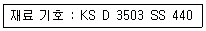
- 최저인장강도
- 최고인장강도
- 재료의 호칭번호
- 탄소 함유량
(정답률: 77%)
20. 제1각법과 제3각법의 도면의 위치가 일치하는 것은?
- 평면도, 배면도
- 정면도, 평면도
- 정면도, 배면도
- 배면도, 저면도
(정답률: 62%)
2과목: 임의 구분
21. 도면에서 굵은 선이 0.35mm일 때 굵은 선과 가는 선 굵기의 합은?
- 0.45mm
- 0.52mm
- 0.53mm
- 0.7mm
(정답률: 61%)
22. 다음 그림 중 선을 그릴 때의 선 연결 방법이 틀린 것은?
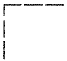
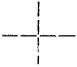
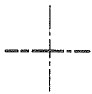
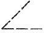
(정답률: 67%)
23. 드릴구멍 치수의 지시선을 표기한 것 중 옳은 것은?
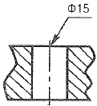
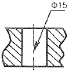
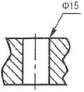
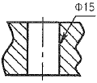
(정답률: 80%)
24. 단면도의 해칭선은 어떤 선을 사용하여 긋는가?
- 파선
- 굵은 실선
- 일점 쇄선
- 가는 실선
(정답률: 66%)
25. 다음 중 축척에 해당하는 척도는?
- 1:1
- 1:2
- 2:1
- 10:1
(정답률: 76%)
26. 나사 각부를 표시하는 선의 종류로 옳은 것은?
- 수나사의 바깥지름과 암나사의 안지름은 굵은 실선으로 그린다.
- 수나사의 골 지름과 암나사의 골 지름은 굵은 실선으로 그린다.
- 수나사와 암나사의 측면 도시에서의 골지름은 굵은 실선으로 그린다.
- 가려선 보이지 않는 나사부는 가는 실선으로 그린다.
(정답률: 58%)
27. 간단한 기계 장치부를 스케치 하려고 할 때 측정 용구에 해당되지 않는 것은?
- 정반
- 스패너
- 각도기
- 버어니어캘리퍼스
(정답률: 79%)
28. 액체 침탄제를 주성분으로 사용하는 염욕제로 탄소와 질소를 동시에 침입확산하는 방법을 청화법이라 하는데 이는 인체에 해롭고 취급에 주의해야 한다. 여기에 해당되는 염욕제는?
- NaOH
- NaNO3
- CaCO3
- NaCN
(정답률: 71%)
29. 다음 중 경도가 가장 높은 조직은?
- 오스테나이트
- 시멘타이트
- 트루스타이트
- 페라이트
(정답률: 82%)
30. 양호한 온도제어를 필요로 하는 경우 2차 제어를 하는 것으로 전기로의 전기회로를 2회로 분할하여 그 한쪽을 단속시켜서 전력을 제어하는 온도 제어 장치는?
- 비례 제어식 온도 제어 장치
- 정치 제어식 온도 제어 장치
- 프로그램 제어식 온도 제어 장치
- 온-오프식 온도 제어 장치
(정답률: 64%)
31. 진공열처리로의 발열체로 사용하지 않는 것은?
- 금속 발열체
- 흑연 발열체
- 니크롬 발열체
- Cu 발열체
(정답률: 51%)
32. 안전교육의 방법을 강의법과 토의법으로 나눌 때 토의법으로 적용할 수 있는 것은?
- 수업의 도입이나 초기 단계
- 시간은 부족한데, 가르칠 내용이 많은 경우
- 교사의 수는 적고 학생이나 청중이 많아서 한 교사가 많은 사람을 상대해야하는 경우
- 알고 있는 지식의 심화 및 어떠한 자료에 대해 보다 명료한 생각을 갖게 하는 경우
(정답률: 76%)
33. 터프트라이드(tufftride)법이라고 하며, 520~570℃에서 10~120분 동안 처리하는 질화 방법은?
- 가스질화
- 순질화
- 침탄질화
- 염욕 연질화
(정답률: 58%)
34. 표면경화법 중 음극인 금속면에서 기체와의 화합, 양극 금속과의 합금화 또는 산화 등으로 인한 경화법으로 공구날의 경화, 기계부품, 내마모성이 요구되는 것 등에 이용되는 경화법은?
- 전해 경화
- 방전 경화
- 고주파 경화
- 하드페이싱
(정답률: 32%)
35. 다음 중 냉각 속도가 가장 느린 냉각 방법은?
- 소금물 냉각
- 기름 냉각
- 로중 냉각
- 공기 냉각
(정답률: 61%)
36. 방진 마스크의 선정기준으로 틀린 것은?
- 흡기ㆍ배기저항이 높은 것
- 분진포집효율이 좋을 것
- 사용적(유효공간)이 적을 것
- 안면밀착성이 좋을 것
(정답률: 67%)
37. 조직을 균일하게 하고 가공시의 내부응력을 제거하며 연화를 목적으로 하는 열처리는?
- 담금질(Quenching)
- 불림(Normalizing)
- 풀림(Annealing)
- 뜨임(Tempering)
(정답률: 60%)
38. 고온의 물체온도를 측정시 물체의 휘도와 표준휘도를 가진 백열전구의 필라멘트 휘도를 수동으로 일치시켜 이 때 전구에 흐르는 전류 측정치를 읽어 온도를 측정하는 것은?
- 저항온도계
- 열전대온도계
- 광고온계
- 방사온도계
(정답률: 63%)
39. 다음 중 열원에 따라 분류된 가열로는?
- 가스로
- 상형로
- 원통로
- 회전로
(정답률: 70%)
40. 주괴편석이나 섬유상 편석을 없애고 강을 균질화시키기 위해서 고온에서 장시간 가열하는 풀림은?
- 연화풀림
- 확산풀림
- 구상화풀림
- 응력제거풀림
(정답률: 49%)
3과목: 임의 구분
41. 철강을 보호분위기 또는 진공 중에서 열처리하여 열처리 전후의 표면 상태를 그대로 유지시켜주는 처리법은?
- 고주파 열처리
- 광휘 열처리
- 고용화 열처리
- 침탄처리
(정답률: 58%)
42. 페라이트 안정화원소이며 탄소강에 첨가되면 경화능 강도 및 내마멸성 등을 향상시키는 원소는?
- Ni
- Cr
- Mo
- V
(정답률: 53%)
43. 열간 성형용 스프링 강재에 관한 설명으로 옳은 것은?
- 탄성한도는 항장력이 약한 것이 높다.
- 피로한도 및 충격치가 높은 스프링 강재는 소르바이트 조직이 좋다.
- 긴 수명을 원하면 피로한도를 낮춘다.
- 극단적인 탄성소멸을 피하기 위해 피로한도를 낮춘다.
(정답률: 69%)
44. 다음의 ( )안에 알맞은 내용은?
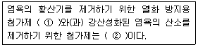
- ① : Mg-Al, ② : 탈산제
- ① : CaSi2, ② : Mg-Al
- ① : 구상 흑연 주철 조각, ② : 탈산제
- ① : CaSi2, ② : 구상 흑연 주철 조각
(정답률: 63%)
45. 열전대에 사용되는 재료에 대한 설명으로 옳은 것은?
- 열기전력이 작아야 한다.
- 고온에서 기계적 강도가 작아야 한다.
- 내열성은 좋아야 하나 내식성은 필요하지 않다.
- 히스테리시스 차가 없어야 한다.
(정답률: 77%)
46. 침탄경화층 측정에서 매크로 조직시험의 유효 경화층 깊이를 나타내는 표시기호는?
- CD-H-E
- CD-H-T
- CD-M-E
- CD-M-T
(정답률: 62%)
47. 공석강의 항온 변태 곡선에서 일반적으로 350~550℃ 온도 범위에서 항온 변태시키면 어떤 조직이 형성되는가?
- 펄라이트
- 상부 베이나이트
- 마텐자이트
- 시멘타이트
(정답률: 47%)
48. 합금공구강 강재를 종류별로 분류할 때 해당되지 않는 것은?
- 절삭공구용
- 내충격공구용
- 냉간금형용
- 산화성공구용
(정답률: 58%)
49. 기계구조용 합금강을 고온 뜨임한 후에 급랭시키는 이유로 가장 적절한 것은?
- 뜨임 메짐을 방지하기 위해
- 경도를 증가시키기 위해
- 변형을 방지하기 위해
- 응력을 제거하기 위해
(정답률: 61%)
50. 가열로에 사용되는 로재 중 보온재가 아닌 것은?
- 암면
- 글라스 울
- 곡분
- 규조토 벽돌
(정답률: 62%)
51. 공석강을 완전 풀림하면 얻어지는 조직은?
- 페라이트 + 펄라이트
- 펄라이트
- 시멘타이트 + 펄라이트
- 마텐자이트 + 레데뷰라이트
(정답률: 50%)
52. 강재를 표면 경화시 강재화학조성은 변화시키지 않고 표면만 경화시키는 방법은?
- 침탄법
- 시안화법
- 금속침투법
- 쇼트피이닝
(정답률: 56%)
53. 열처리시 다음과 같은 특징을 갖는 로의 종류는?
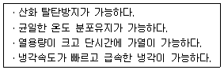
- 풀림로
- 상자형로
- 도가니로
- 염욕로
(정답률: 63%)
54. 금속 침투법에서 칼로라이징은 어떤 금속을 침투시켜 내식성이 좋은 표면층을 형성하는가?
- Al
- Cr
- Zn
- Si
(정답률: 61%)
55. 산세 처리의 작업 과정을 순서에 맞게 기호로 옳게 나타낸 것은?
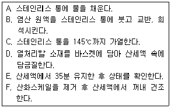
- C → A → B → D → F → E
- C → A → D → E → B → F
- A → B → C → D → E → F
- A → B → D → C → F → E
(정답률: 78%)
56. 제에벡(seebeck) 효과를 응용한 온도계는?
- 열전 온도계
- 저항 온도계
- 방사 온도계
- 압력 온도계
(정답률: 60%)
57. 염욕 열처리에 사용되는 염화물 중 가장 저온용 염욕에 해당되는 것은?
- NaCl
- KCl
- KNO3
- BaCl2
(정답률: 39%)
58. 다음 중 침탄 경화층에 대한 설명으로 틀린 것은?
- 유효경화층 깊이는 전경화층 깊이보다 깊은 위치를 의미한다.
- 침탄층의 경도 측정은 경사측정법, 직각측정법 등이 있다.
- 동일 온도와 시간으로 침탄경화 하더라도 강종에 따라 다른 침탄경화층을 나타낼 수 있다.
- 침탄강의 경화층 깊이의 측정은 침탄 후 담금질 된 것이나 200℃ 이하에서 뜨임한 것을 이용한다.
(정답률: 40%)
59. 강의 임계 냉각 속도에 미치는 합금 원소의 영향에서 임계 냉각 속도를 빠르게 하는 원소는?
- Mn
- Cr
- Mo
- Co
(정답률: 53%)
60. 열처리에 있어 매우 중요한 조직으로 담금질 할 때 생기며 경도가 현저히 높은 것이 특징인 변태는?
- 공석변태
- 마텐자이트변태
- 항온변태
- 연속냉각변태
(정답률: 71%)